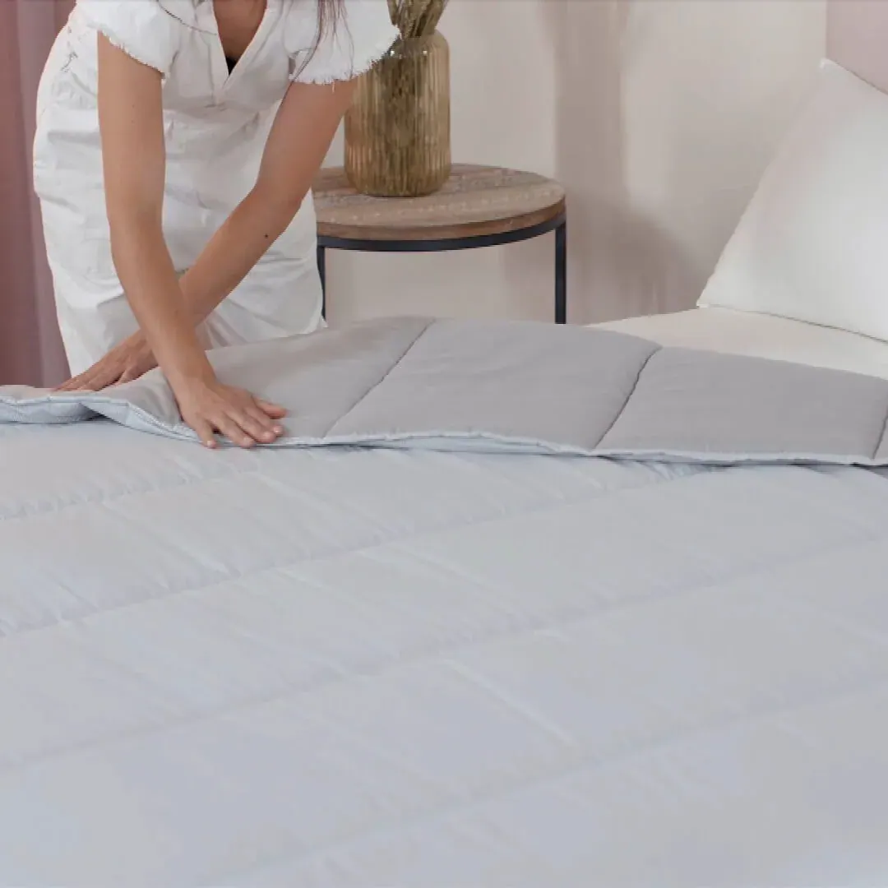

Trucos para poner la funda nórdica

No obstante, hay otra gran parte de la población, que vive este momento con horror. Y no es de extrañar: la tarea de poner la funda a un nórdico puede convertirse en una auténtica misión imposible.
Tenemos que admitir que a todos nos ha pasado, intentamos poner la funda del edredón de la mejor manera posible para acabar agotados y rendidos en el intento. Con la funda mal colocada y una parte del edredón nórdico asomando por el borde, cuando sabemos que cabe de sobra, maldecimos el momento en que llegó la hora de poner el nórdico a la cama.
¿Existe una técnica fácil para colocar la funda nórdica del edredón?
La respuesta es sí. En LOMONACO creemos que con la cantidad de trucos y consejos que vamos a proporcionarte a continuación, no vas a tener más quebraderos de cabeza cuando llegue el momento.
Poner el edredón nórdico con ayuda de pinzas
Esta es una de las técnicas más utilizadas, para llevarla a cabo necesitamos la ayuda de pinzas de tender la ropa o en su defecto, imperdibles. La idea es estirar la funda sobre la cama y después ir introduciendo el relleno nórdico poco a poco por la abertura hasta coincidir esquina con esquina.
Una vez alcanzada esa posición, debemos sujetar esa esquina con pinzas y a partir de ahí los bordes para que quede todo fijado y muy estirado.
Técnica mixta para poner la funda al edredón nórdico
Esta técnica es una combinación de los dos trucos anteriores. Estira el relleno nórdico sobre la cama y dale la vuelta a la funda. Introduce los brazos y coge las esquinas superiores, una vez que las tengas cogidas, atrapa también las dos esquinas superiores del relleno y dale la vuelta a la funda.
Fija las esquinas con pinzas y ve colocando la funda sobre el relleno nórdico. Finalmente quita las pinzas y disfruta de tu edredón nórdico bien colocado.
Poner la funda del edredón dándole la vuelta
Esta técnica “absolutamente revolucionaria”, consiste en darle la vuelta a la funda por completo, estirarla y colocar el relleno nórdico arriba. Da igual el tamaño de la cama, la clave está en colocarse a los pies de la cama y sin soltar ambas piezas, ve enrollando las dos cosas conjuntamente avanzando sobre el edredón en dirección al cabecero.
Encaja los botones o cierra la cremallera y darle la vuelta al edredón para que los pies coincidan con la parte de la abertura.
Funda nórdica reversible: aprovecha todas sus ventajas
¿Por qué una funda nórdica reversible?
Una vez que ya sabemos cómo colocar la funda nórdica (¡y lo que nos ha costado!), a muchos nos encantaría no tener que quitarla en todo el invierno y olvidarnos del asunto. Evidentemente, esta práctica es poco recomendable por unas razones obvias de higiene; recordamos: se recomienda lavar las sábanas al menos una vez a la semana y la funda nórdica, como máximo, cada dos.
Pero ¿y si podemos aprovechar la misma funda nórdica para darle un look diferente a nuestra cama?
Funda Nórdica Reversible LOMONACO
Se trata de una funda nórdica en colores neutros, un imprescindible tanto en el equipo de descanso, como en la decoración del dormitorio.
Disponible en colores blancos y grises, adaptable a cualquier ambiente, sea cual sea la decoración de tu dormitorio, con la Funda Nórdica LOMONACO, el resultado será de 10.
Su composición, 50% poliéster – 50% algodón de sobra testada en nuestra casa, le otorga una durabilidad que pocas fundas nórdicas del mercado pueden ofrecer. Durabilidad, elegancia, serenidad y suavidad para una temporada otoño-invierno, nos vestirá la cama con un aire renovado y moderno gracias a su sencillez.
Contiene sábana bajera color blanco, funda nórdica reversible en color blanco y gris y funda de almohada decorada con el logotipo en sus remates, el Monogram exclusivo LOMONACO.
Recomendaciones de uso y mantenimiento a la hora de poner edredón el nórdico.
Si quitamos el edredón allá por finales de abril, y volvemos a colocarlo en noviembre, el nórdico pasa almacenado bastante tiempo. Lo ideal es que antes de guardarlo, lo hubiésemos lavado (según las recomendaciones que nos haga el fabricante), pero si no lo hiciste, el momento es justo antes de colocarlo.
También, después de llevar (en el mejor de los casos) casi 5 meses guardado, es necesario realizar la “puesta a punto”:
-No uses el aspirador de tapicerías encima de tu edredón nórdico, ya que estropea el tejido. Podemos utilizar para quitar el polvo un cepillo suave
-Sacude y ahueca el edredón antes de colocarlo, eso te proporcionará una sensación de confort extra a la hora de dormir.